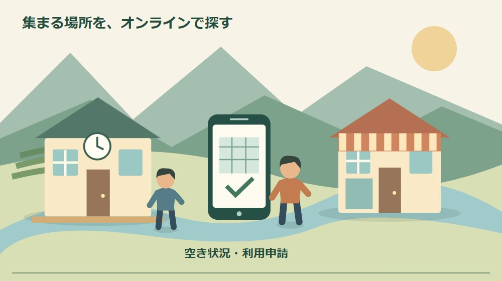
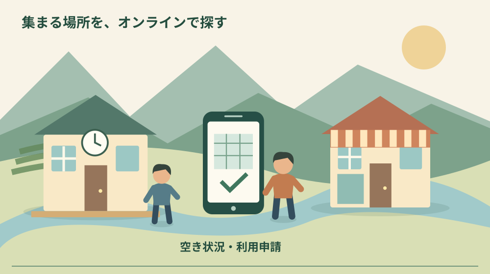
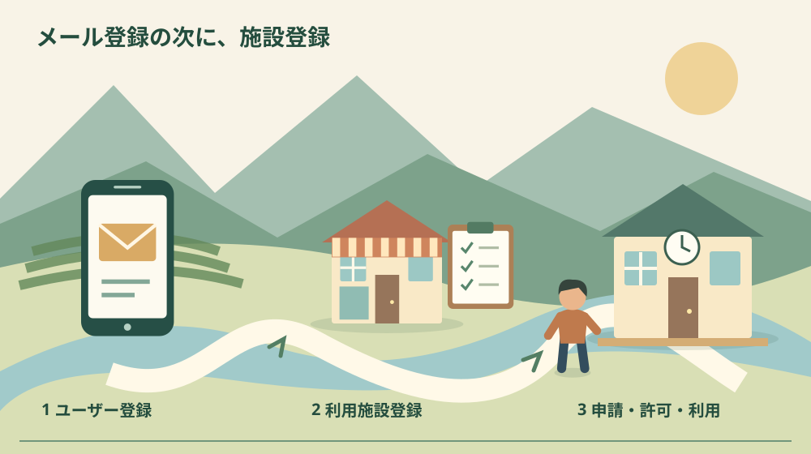

森町公共施設予約システム｜最初の登録手順

Q. 森町の公共施設をネット予約したい。最初は何を登録する？
森町公共施設予約システムは2026年10月1日導入。最初にメールアドレスでユーザー登録し、次に使う施設ごとの利用施設登録を行います。ユーザー登録だけでは予約できません。総合体育館・町営グラウンドは団体登録が必要です。今日は使いたい施設を一つ選び、個人か団体かを確かめてから登録へ進んでください。
集まる場所を借りる前の、行き直しを減らす
森町で仲間と集まる場所を用意するには、日程を聞き、空きを確認し、使用料を払い、鍵や片付けを確かめる仕事があります。窓口の職員も、活動する団体の担当者も、見えにくい連絡と移動を担ってきました。予約がオンラインになる意味は、その一部を減らせるところにあります。
大石浩之（磐田市／不動産業）です。私は、手続きが画面で進むことには賛成です。ただ、登録ボタンを押したら施設が使えると思い込むと、当日に人を待たせることになります。今回の新しい仕組みは、最初のユーザー登録と施設ごとの申請を分けて理解する必要があります。
森町公共施設予約システムは2026年10月1日導入と町が案内しています。利用者登録の受付開始は9月11日でした。この記事は10月4日に町公式案内を確認し、転入後や二拠点滞在中に初めて施設を借りたい人向けに、登録で止まらないための順序を整理したものです。
会場の使用時間や準備・撤去の考え方は、森町文化会館を利用する前の案内で扱っています。今回は新システムの最初の登録に絞ります。予約方法が変わっても、部屋の用途や使用時間を確かめる仕事までなくなるわけではありません。
事実整理｜対象4施設と、二つの登録
町の運用開始案内に載っている対象は、森町総合体育館、森町営グラウンド、森町文化会館、森町町民生活センターです。公共施設という名前だけで町内の全施設が同じシステムに入ったとは考えません。使いたい場所の正式名を確認し、対象施設の案内に対応させます。
森町は、スマートフォンやパソコンから24時間、空き状況の確認と利用申請ができると説明しています。窓口が開いている時刻に予定を合わせなくても、申請を進められるのが仕組みの特徴です。24時間の申請と、24時間の施設利用や問い合わせ対応は別の話です。
登録は、メールアドレスを使うユーザー登録と、施設ごとの利用施設登録に分かれます。町は、ユーザー登録だけでは予約できないと明記しています。アカウントができたという連絡と、その施設を予約できる状態になったことを分けて確認するのが、最初の注意点です。
個人登録と団体登録にも区分があります。町は、総合体育館と町営グラウンドを団体のみが利用できる施設として示しています。少人数で使うから個人、代表者一人が操作するから個人といった判断では決められません。利用する活動と登録区分を施設へ確かめます。
文化会館の「ご利用案内」でも、新システムを導入したことと、10月1日以降の利用には事前登録が必要なことを確認できました。このページは10月4日の直接確認で、更新日が2026年10月1日となっています。以前の表示更新日を、新しい仕組みの公表日として使いません。

手順1｜メールを受け取れる状態でユーザー登録する
ユーザー登録の入口は、森町公式の運用開始案内にある森町公共施設予約システムへのリンクです。初めて使う際は、町のページから進み、画面の案内と利用者向けマニュアルを確認します。この記事の文だけを頼りに、似た名前の別の予約サービスへ登録しないようにします。
登録には、自分が継続して確認できるメールアドレスを用意します。私は、普段使わないアドレスをその場で選ぶより、申請後の連絡まで読めるものを選ぶ方がよいと考えます。団体で使うなら、担当が交代した後にも連絡を受け取れる方法を、利用規約や施設の案内に沿って決めます。
町の説明では、登録完了メールにログインIDが表示されます。メールは削除せず保管するよう案内されています。登録画面を閉じる前に、メールが届いたかと、次に入るための情報が確認できるかを見ます。届かない場合は迷惑メールの振分けなどを確認し、重複登録を急がないのが私の提案です。
私は、ログイン情報と団体の活動予定を別に管理する方がよいと考えます。会員全員が予定を見る必要はあっても、全員が同じパスワードを持つ必要があるとは限りません。共有方法や担当変更の手続きが分からなければ、施設へ確認します。便利さのために連絡先や認証情報を無制限に配らないことです。
ここまでが、システムに入るための準備です。完了メールが届いても、使う施設の手続きは残ります。「登録済み」という一言で家族や仲間へ報告するなら、ユーザー登録までなのか施設登録までなのかも添えます。進んだ段階を言葉にするだけで、予約できたという誤解を減らせます。
手順2｜使いたい施設ごとの利用施設登録へ進む
利用施設登録は、ユーザー登録の後に行う施設ごとの申請です。町公式案内のSTEP2は、使いたい施設ごとに施設利用申請が必要と説明しています。文化会館の手続きをしたら体育館も同じ条件で使えるという扱いにはせず、追加で使う場所の登録を確認します。
私は、最初から対象施設を全て登録しようとするより、直近に使いたい施設を一つ選ぶ方が進めやすいと考えます。活動内容、人数、希望する日、必要な道具を控え、その施設が候補になるかを確認します。登録の数を増やすことより、実際の活動に合う場所へ進めることを優先します。
団体登録では、団体の名前と実際の活動をそろえて考えます。代表者、連絡を受ける人、当日に立ち会う人が違う場合もあり得ます。どの情報を申請するかは実際の画面と施設の案内に従います。名義を借りたり、利用条件に合わせて存在しない団体を作ったことにしたりする方法は勧めません。
今回確認した町の概要だけでは、全施設に共通する登録審査の所要日数は確定できません。登録すれば同日中に必ず予約できるとも、何日前までなら間に合うとも書けません。使う予定がある人は、施設登録の後にどの確認が必要かを窓口へ尋ね、仲間への確定連絡は状態を確かめてから出します。
町外に住む人や二拠点で滞在する人の利用可否、料金、団体の条件も、希望施設ごとに確認する対象です。オンラインで画面を開けることは、全ての人に同一条件で利用を認めるという意味ではありません。現在の住所と活動目的を伝え、自分の条件に合うかを確かめます。
予約、許可、支払い、入室を別々に確認する
森町の新システムは空き状況の確認と利用申請に対応しています。空きが表示されたこと、申請を送ったこと、使用が許可されたことは区別します。私は、申請の控えと施設からの案内を見ながら、どの段階まで進んだかを記録する方法を勧めます。画面を見ただけで確定としないことです。
支払いはクレジットカードとPayPayによるオンライン決済のほか、従来の納付書による現金払いも案内されています。全員にキャッシュレスだけを求める仕組みとは読めません。団体で立替える場合は、支払う人と精算する方法を先に決め、個人の負担が後から曖昧にならないようにします。
電子錠が導入されるのは一部施設です。町は、使用許可後にメールで暗証番号が届き、窓口を介さず直接利用できる施設があると説明しています。全ての会場で鍵の借受けがなくなるとは考えません。予約する部屋の入室方法、当日の連絡先、退出時の扱いを確認します。
文化会館の一般利用案内では、使用時間に準備、練習、後片付け等も含みます。活動そのものが2時間でも、机を並べて元に戻す時間が別に必要なら、借りる時間の考え方は変わります。システムで予約する際も、活動開始と会場へ入る時刻を一つにしないでください。
地域の別の集まりの場所を考える場合は、森町の地区センターを調べる記事も入口になります。ただし、その記事に載る場所が全て新システムの対象だという意味ではありません。施設名、用途、予約窓口を一組にして確認する姿勢は、別の場所でも共通です。
良い点｜窓口へ行くための移動を減らせる
新システムで私が良いと感じるのは、仕事が終わった後や町外にいる間にも空きを調べ、申請できることです。二拠点で森町に滞在する人にとって、申請だけのために移動する負担を減らせる余地があります。町の職員が不在の時間でも手続きを進められる点を、具体的な利点として受け止めます。
施設ごとに必要な手続きを確認できる入口がまとまっている点も役立ちます。私は、最初にどこへ電話すればよいか分からない状態を減らす効果を期待します。ただし、予約画面だけで活動内容に合うか判断できるとは限りません。設備や用途の相談は施設へつなぐ方が、当日の行き違いを防げます。
現金払いの選択肢が残ることも評価したい点です。団体によって会計の方法は違い、代表者個人のカードへ全て寄せると立替えが集中する可能性があります。私は、便利な支払いを選びながら、誰が費用を担ったかが記録に残る形を優先します。新しい仕組みを使うことだけが目的ではありません。
何も予定を詰め込まない日に、地域で過ごせる場所を一つ調べる使い方もできます。移住前に何もない日曜日を試す記事では、普段の暮らしを見る考え方を扱いました。私は、施設の存在を知り、小さな活動を考えることも、森町との関わりを増やす入口になると感じます。
注文したい点｜登録の完了を一種類に見せないでほしい
新システムで私が注意したいのは、ユーザー登録が終わった人ほど、そのまま予約できると思いやすい構造です。町は二段階であることを明記しています。私は、利用者側も「メール登録」「施設登録」「利用申請」と分けて控える方がよいと考えます。登録済みという曖昧な一語を避けるだけでも違います。
登録から利用可能になるまでの所要時間が分からなければ、週末の活動をいつ仲間へ知らせるか決めにくくなります。私は、施設ごとに確認の目安が見えると助かると感じます。今回の資料から一律の日数は出せないため、使いたい日を一つ決め、間に合うか施設へ確認する小さな行動へつなげます。
デジタル化で移動が減っても、連絡を読む人が一人に固定されれば担い手の負担は残ります。スマートフォンを操作できる人へ申請も会計も鍵も集中させない工夫が要ります。今日は、団体内で通知を確認する人と、当日に会場へ行く人が同じかを確かめるだけでも進められます。
電子錠についても、暗証番号さえ知れば全て解決すると思い込まない方がよいと考えます。番号が見当たらない、端末が使えない、入室方法が分からない場合の連絡先を控えます。公開の連絡グループへ番号を貼る前に、必要な人と共有する方法を施設の案内で確認してください。

対案・結論｜今日は使う施設を一つ選ぶ
初めて登録する今日の一歩は、対象4施設から使いたい場所を一つ選ぶことです。文化的な集まりか、運動か、会議か、活動内容を一文にします。総合体育館・町営グラウンドなら団体登録の条件を先に見ます。まだ利用日が確定していなくても、場所と登録区分の確認は進められます。
次に町公式案内からシステムへ進み、メールを受け取れる状態でユーザー登録します。ログインIDを保存し、選んだ施設の利用施設登録へ進みます。入力画面の細かい配置は変わる場合があるため、町が掲載する利用者向けマニュアルと実際の画面を併せて確認してください。
不明点は、操作のことと施設利用の条件を分けてメモします。メールが届かない問題なのか、団体の条件なのか、希望する用途なのかを整理すると、窓口へ伝える内容が短くなります。問い合わせ先は町公式の運用開始案内と各施設の現行案内で確認し、パスワードをそのまま送って相談しないでください。
仲間に残す記録｜担当が替わっても使えるようにする
団体の共有記録には、施設の正式名、利用目的、希望日、申請した日、確認した状態、支払いの担当を書きます。使用許可を得た後は利用時間と入退室方法も加えます。まだ申請中の予定には申請中と明記し、全員が確定した催しだと受け取らないようにします。
担当が交代するときは、ログイン情報を渡すだけで終えません。登録した名義や連絡先の変更が必要かを施設へ確認し、過去の予約や未払いの扱いも整理します。個人情報と活動の予定は分けて管理します。家族が代わりに操作する場合も、誰の申請として進めるかを曖昧にしないことです。
当日用の記録は、予約管理の記録より短くできます。会場、集合時刻、利用終了時刻、片付け、困ったときの連絡先があれば、参加者は動きやすくなります。代表者だけが全ての案内を持つ状態を避け、必要な情報が必要な担当へ届く形を作るのが私の提案です。
大石の視点｜便利な画面と、使う責任を分ける
私は、登録が便利になっても、使う責任まで画面に預けるわけにはいかないと考えます。空き状況を調べる道具は、施設の使い方や団体の約束を決める人の代わりにはなりません。申請、支払い、鍵、片付けを誰が担うかが見えてこそ、デジタル化で減らした時間を活動に回せます。
正直に言えば、初めて使う人へどこまで事前確認を勧めるか、私にも迷いがあります。確認を増やしすぎれば、便利な入口をかえって難しくしてしまうからです。それでも、使う施設と登録区分の二つは飛ばせません。全体を完璧に覚えるより、今回使う一施設について順序を確かめる方を選びます。
不動産の仕事でも、鍵を受け取れることと、その場所を目的どおり使えることは同じではありません。公共施設も、利用条件と時間、管理する人との連絡がそろって初めて活動の場所になります。森町の場を支える人の負担を減らすために、利用者側が準備できることは小さくてもあります。
まとめ｜ユーザー登録の次に、施設登録がある
森町公共施設予約システムの最初の手順は、メールによるユーザー登録、その後の施設ごとの利用施設登録です。総合体育館と町営グラウンドは団体のみという条件があります。オンライン申請、支払い、電子錠の範囲は分けて確認し、登録完了を予約確定と混同しないでください。
今日は使う施設を一つ選べば十分です。場所と活動内容が決まれば、どの区分で登録し、何を施設へ聞くかが見えてきます。窓口への行き直しを減らし、集まりを支える人の時間を守るための、最初の登録から始めてください。
よくある質問
ユーザー登録の完了メールが届けば予約できますか？
ユーザー登録だけでは森町公共施設予約システムで予約できません。町は、使いたい施設ごとの施設利用申請も必要と案内しています。完了メールに記載されたログインIDを保管し、利用施設登録へ進んでください。入力後にどの状態まで進んだかを確認し、不明なら施設の窓口へ問い合わせます。
個人で総合体育館や町営グラウンドを登録できますか？
町の新システム案内では、森町総合体育館と森町営グラウンドは団体のみが利用できる施設として掲載されています。個人登録と団体登録を混同せず、活動する団体の名義や代表者、申請条件を施設へ確認してください。町外在住者や二拠点滞在者の個別の利用可否・料金まで、この記事だけで判断することはできません。
支払いも鍵の受取りも、全施設でオンラインですか？
支払いはクレジットカードとPayPayのほか、従来の納付書による現金払いも案内されています。一方、電子錠は一部施設だけです。使用許可後にメールで暗証番号が届く施設もありますが、全施設で鍵の借受けが不要とは限りません。利用する部屋の支払いと入退室方法を、申請後の案内で確認してください。
実家や土地の資料を家族で整理する場合は、実家カルテも利用できます。売却未定でも使える本サイト運営会社の民間サービスです。森町や各団体の公式手続ではなく、利用は任意です。
公式情報源
2026年10月4日確認（2026年10月確認）。制度・数値・受付や利用条件は変わる場合があります。行動前に公式の最新案内を確認してください。個別の契約・税務・認定等の判断は担当窓口や専門家へ相談してください。